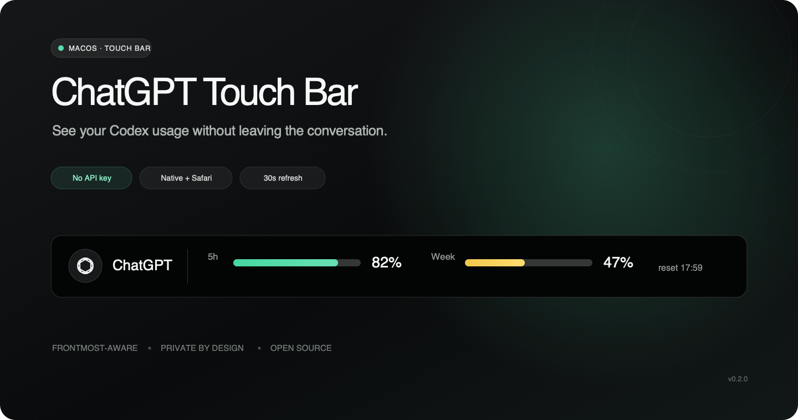

ChatGPT Touch Bar

ChatGPT/Codexアプリ、またはSafariのChatGPTタブを使用している間、Codexの利用状況をMacBook ProのTouch Barに表示するmacOS常駐ヘルパーです。
続きを見る 詳細を閉じる
5時間枠と週次枠の残り容量、次のリセット時刻を手元で確認できます。対象外のアプリやWebサイトへ切り替えると、Touch Barは自動的に通常の表示へ戻ります。
既存のCodex認証を利用してローカルで動作し、APIキーや有料の開発者APIは必要ありません。アクセス解析、テレメトリ、外部データベースを使用せず、Safari連携では現在のタブURLだけを確認します。
- Codexの5時間枠・週次枠の残り容量を表示
- 次回リセット時刻と30秒ごとの自動更新
- ChatGPT/CodexデスクトップアプリとSafariに対応
- 利用状況に応じたTouch Barの表示・復元
Touch Bar搭載MacBook ProとmacOS 12以降が必要です。署名済みバイナリはまだ公開していないため、現在はソースコードからビルドして利用します。
Swift
AppKit
NSTouchBar
NSWorkspace
AppleScript
Codex App Server
View on GitHub
MIT License